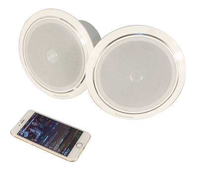

背景音乐系统
布线太烦
传统背景音乐系统安装复杂，设计繁琐，不但要考虑设备安装位置还要顾虑线路走线问题，而往往这时候用户都已经装修了一半了才提出装背景音乐的要求，返工安装势必增加人力物力，而设计师也被搞得精疲力尽
WiFi音乐
配置太复杂
虽然WIFI方案可以实现无线传输，但是配置参数相当复杂，即使有经验的工程师往往也需要花费大量的时间设置，让普通的用户如何轻易上手?

便携式音箱
要充电,占插座
便携式音响虽然安装方便使用也方便,但毕竟需要充电或者要插插头,使用的便利性方面始终不比背景音乐方便

蓝牙无线吸顶扬声器
满足您家庭背景音乐所有需求